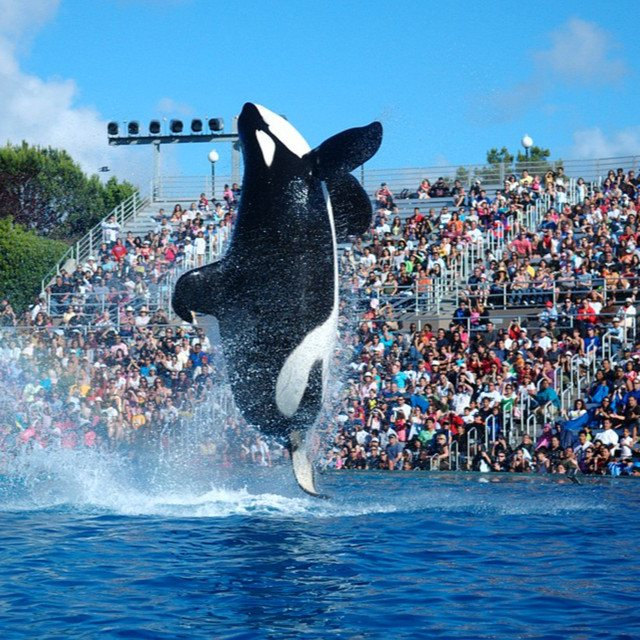

The Eclectic Polymath Podcast · Archive
#122 SeaWorld: Shamu, Captivity, and the Business of Reinvention

About this episode
SeaWorld built one of the most recognizable entertainment brands in America around the idea that marine animals could be spectacle, education, and family entertainment all at once.
This episode traces the company from its 1960s origins through the rise of Shamu and the killer-whale show as the center of its identity. It gets into how animals were acquired and trained, why the model became so successful, and how SeaWorld positioned itself as entertainment, science, and conservation at the same time.
We also get into the backlash over captivity, trainer deaths, Blackfish, changing public attitudes toward animal intelligence, and the business crisis that followed. This is a story about how SeaWorld survived by moving away from the model that made it famous—and what its transformation says about the way culture can force an institution to reinvent itself.
Key points
- SeaWorld built one of the most recognizable entertainment brands in America around the idea that marine animals could be spectacle, education, and family entertainment all at once.
- This episode traces the company from its 1960s origins through the rise of Shamu and the killer-whale show as the center of its identity.
- It gets into how animals were acquired and trained, why the model became so successful, and how SeaWorld positioned itself as entertainment, science, and conservation at the same time.
- We also get into the backlash over captivity, trainer deaths, Blackfish, changing public attitudes toward animal intelligence, and the business crisis that followed.
- This is a story about how SeaWorld survived by moving away from the model that made it famous—and what its transformation says about the way culture can force an institution to reinvent itself.
More like this
 #197 Spirit Halloween: The Business of the Pop-UpOctober 8, 202648:16
#197 Spirit Halloween: The Business of the Pop-UpOctober 8, 202648:16 #170 Hong Kong Under Japan: The Three Years and Eight Months That Changed the CitySeptember 21, 202659:25
#170 Hong Kong Under Japan: The Three Years and Eight Months That Changed the CitySeptember 21, 202659:25 #154 Salvador: Black Brazil, Colonial Power, and the Fractured CitySeptember 11, 202652:35
#154 Salvador: Black Brazil, Colonial Power, and the Fractured CitySeptember 11, 202652:35 #149 Dolly Parton: Dollywood, IP, and the Smoky Mountain StrategistAugust 26, 202635:11
#149 Dolly Parton: Dollywood, IP, and the Smoky Mountain StrategistAugust 26, 202635:11